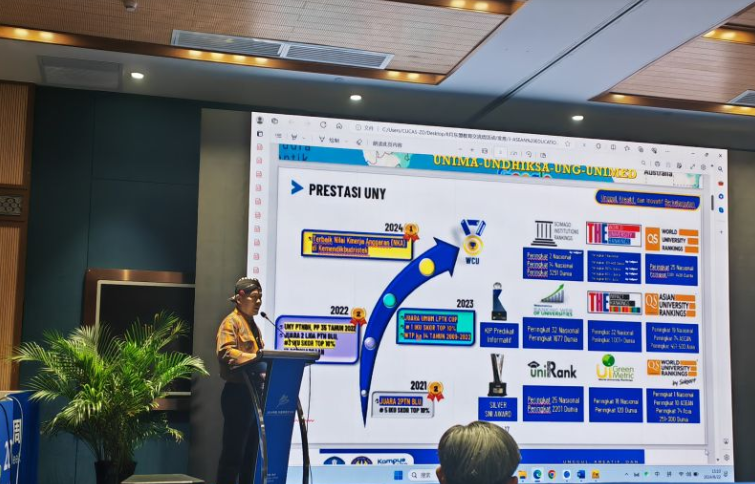
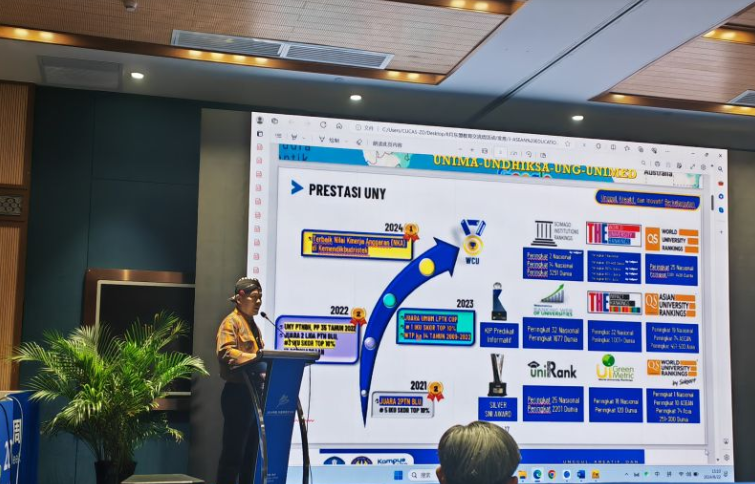

Kerja sama multilateral merupakankolaborasi antara lebih dari dua negara, di mana beberapa negara terlibat dalam suatu inisiatif bersama untuk mencapai tujuan tertentu. Dalam bidang pendidikan, kerja sama multilateral Indonesia-China sering melibatkan negara-negara lain dalam berbagai forum regional atau internasional. Seperti ASEAN-China, G20, dan Forum Kerja Sama Asia Timur (East Asia Summit). Dalam fokus pendidikan berkualitas, beberapa langkah yang bisa diambil adalah:
a. Peningkatan Kualitas Pendidikan melalui Pengalaman Bersama : Dalam forum multilateral, Indonesia dan China dapat saling bertukar pengalaman dalam memperbaiki sistem pendidikan mereka. Misalnya, China yang telah mengalami kemajuan pesat dalam sektor pendidikan, bisa berbagi praktik terbaik dalam hal kurikulum, teknologi pendidikan, serta reformasi pendidikan.
b. Penguatan Pendidikan untuk Pembangunan Berkelanjutan : Kerja sama multilateral dapat memfasilitasi inisiatif bersama untuk mencapai SDGs, termasuk pendidikan berkualitas. Melalui kolaborasi dengan negara-negara lain, Indonesia dan China bisa memperkuat upaya untuk meningkatkan kualitas pendidikan di Asia Tenggara dan di kawasan yang lebih luas.